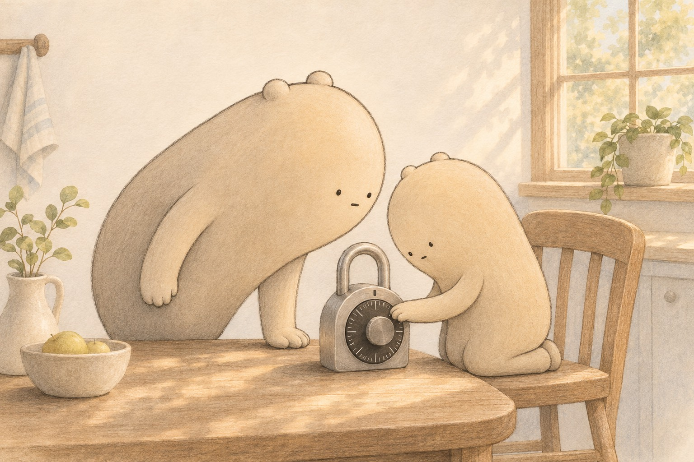
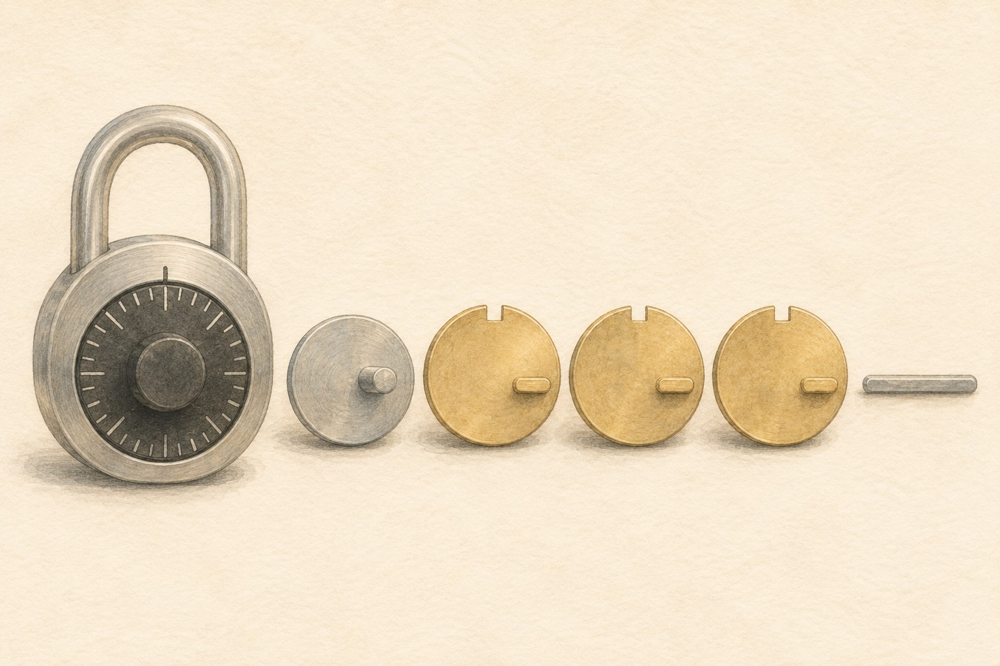
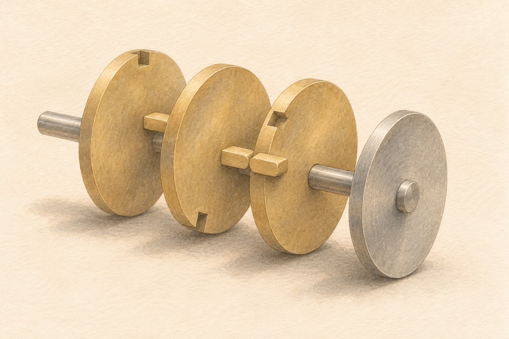
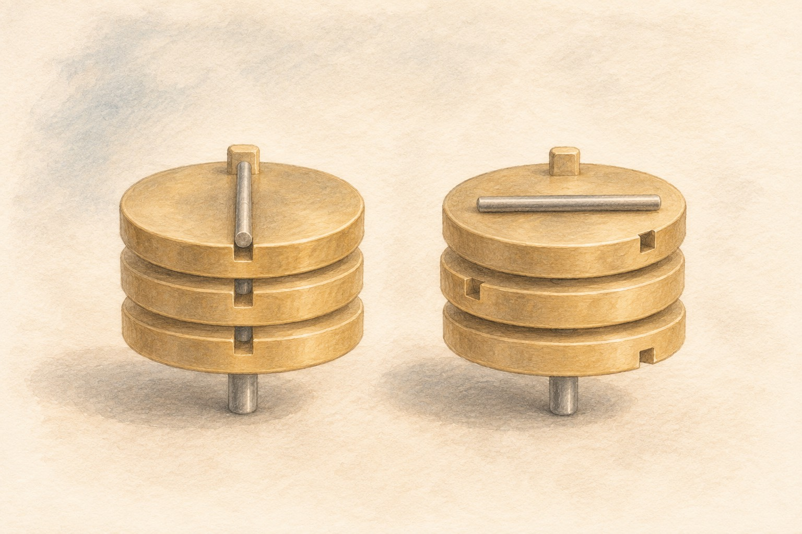
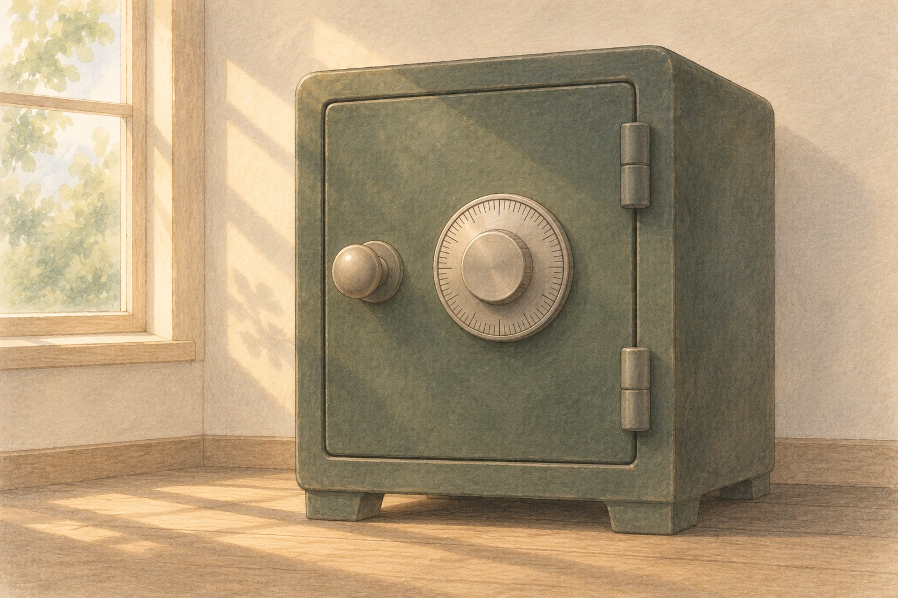
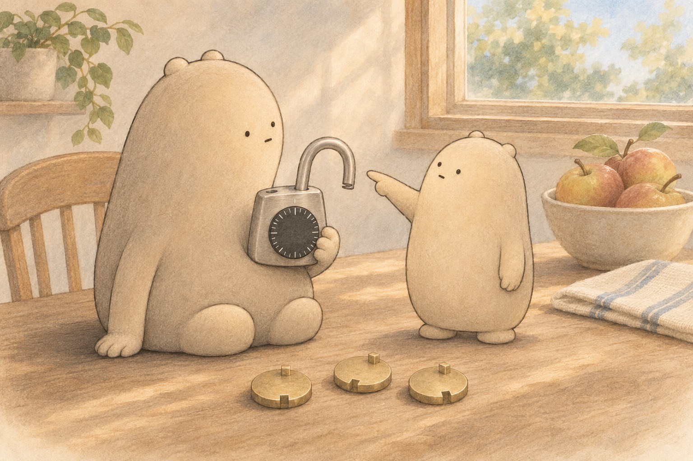

How can a turning dial remember three secret numbers?

Where shall we look?

Behind the dial: a drive cam, three notched wheels and a thin fence.
What is hiding behind the dial?
Follow the row from the dial to the drive cam, three wheels and a thin bar.
A little explanation & something to try
Behind the dial sits a drive cam, a disc fixed to the dial with one short peg. Next come three flat wheels on one rod. Each wheel has a notch called a gate. The thin bar is the fence. The wheels are loose, so they turn only when something pushes them.
Try this. Cut three paper circles and snip a small notch in each. Stack them on a pencil. Can you turn them so all three notches line up?

Each wheel's tab catches the next, like train cars hooking on.
Why do you spin the dial three times first?
Find the tab on each wheel and the spot where one tab touches the next.
A little explanation & something to try
The cam's peg travels almost a full turn before it bumps the first wheel. That wheel then needs nearly a turn to catch the second, and the second to catch the third. Three spins make sure every wheel is moving. Then the wheel farthest from the dial is set first.
Try this. Tie three toy cars together with loose string. Pull the front one slowly. Watch each car start to move only when its string goes tight.

Gates in a row let the fence drop. One stray gate keeps it up.
What has to happen for the lock to open?
Compare the stack with gates in a line to the stack with gates pointing every way.
A little explanation & something to try
The fence rests on the smooth edges of the wheels. It can drop only when all three gates sit in one straight line beneath it. If even one gate points the wrong way, the fence stays up and the lock stays shut.
Try this. Set out three cups with their handles pointing different ways. Turn them until every handle points the same way, like gates in a row.

Gates are a bit wide, so a close number can still work.
Can a number that is close still open a lock?
Find the big dial on the safe door and the fine marks around its edge.
A little explanation & something to try
Each gate is a little wider than the fence, so being one mark off can still work. Testers check that good safe locks open only within about one mark of each number. Some very strong locks use plastic wheels that are hard to see in X-ray pictures. They also keep the fence lifted off the wheels, so nobody can feel it.
Try this. Hide a toy under one of ten cups in a row. Let a helper guess. Does it help if you say “close” when they are one cup away?
Find the lock patterns
Look for the step between numbers. Fill each missing number.
Each wheel's tab catches the next, like train cars hooking on.
Choose one pattern and tell how you know the missing number fits.
1.Little Wonderer sees a longer mark at every fifth number on the dial. What number comes next?
5, 10, 15, ___
A small hint
Count on by 5 from the number just before the blank.
2.The big numbers on the dial go up by tens. What number is missing?
0, ___, 20, 30
A small hint
Count on by 10 from the number just before the blank.
3.In a count, the little one counts dial clicks two at a time. What number comes next?
12, 14, 16, ___
A small hint
Count on by 2 from the number just before the blank.
4.A school hallway has lockers in rows of 5. Counting by fives, what number is missing?
25, 30, ___, 40, 45
A small hint
Count on by 5 from the number just before the blank.
5.A shop packs padlocks in boxes of 10. Big Wonderer counts the boxes by tens. What number comes next?
40, 50, 60, ___
A small hint
Count on by 10 from the number just before the blank.
6.A safe maker tests 2 locks each hour. What number is missing from the count?
64, 66, ___, 70
A small hint
Count on by 2 from the number just before the blank.
The lock on the kitchen table
How Combo Locks Work
Three secret numbers
Little Wonderer finds a padlock on the kitchen table. Its round dial has forty numbers, from 0 to 39. The little one turns it slowly and hears soft clicks inside. Big Wonderer leans in to listen too. Only three numbers in the right order will open it. How can a turning dial remember them?
What does the little one hear inside the lock?
Wheels in a stack
Behind the dial hides a stack of three flat wheels on one thin rod. Each wheel has one small notch in its edge, called a gate. The wheels sit loose, so they do not turn when the dial starts to move. In front of them is a drive cam, a disc fixed to the dial. It has one short peg.
What is the small notch on each wheel called?
Picking up the wheels
Turn the dial, and the cam's peg swings round. After almost a full turn, it bumps a tab on the nearest wheel and drags it along. That wheel's own peg catches the next wheel, and that one catches the last. So you spin three times first, like an engine hooking three train cars.
Why do you spin the dial three times first?
Back and forth
Here is a clue. Stop on the first number, and the farthest wheel is set. Now turn the other way. The pegs let go, so that wheel stays put. You pass the first number once, because the cam needs a full turn to pick up the middle wheel. Stop on the second number. Then turn back to the third.
Why do you pass the first number once?

The fence drops in
Back at the table, Big Wonderer pulls on the lock. Pop! The shackle swings open, and the little one points. Now the guess changes. The lock never remembered any numbers. The wheels just stayed where they were left. When all three gates line up, a thin bar called a fence drops in and frees the shackle.
What drops into the lined-up gates?
Close enough
Here is a surprise. Each gate is a little wider than the fence, so a number one off can often still open a lock! Safe makers test locks so they open only very close to each number. Experts can feel tiny bumps as the fence brushes the wheels. So the best safe locks hold the fence away. How could a lock give away no clues?